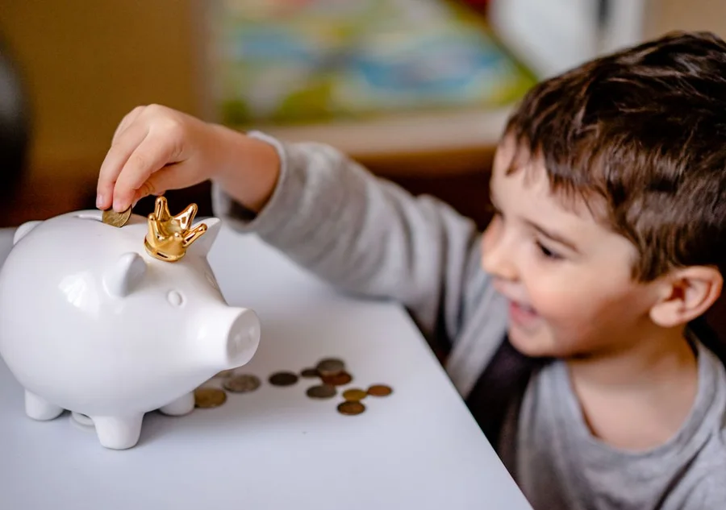
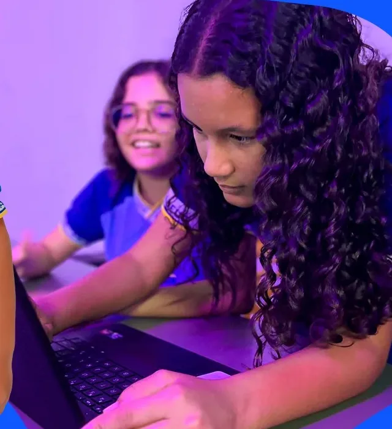
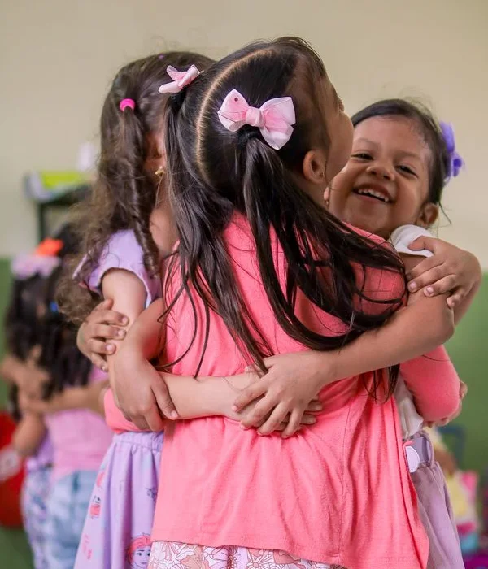
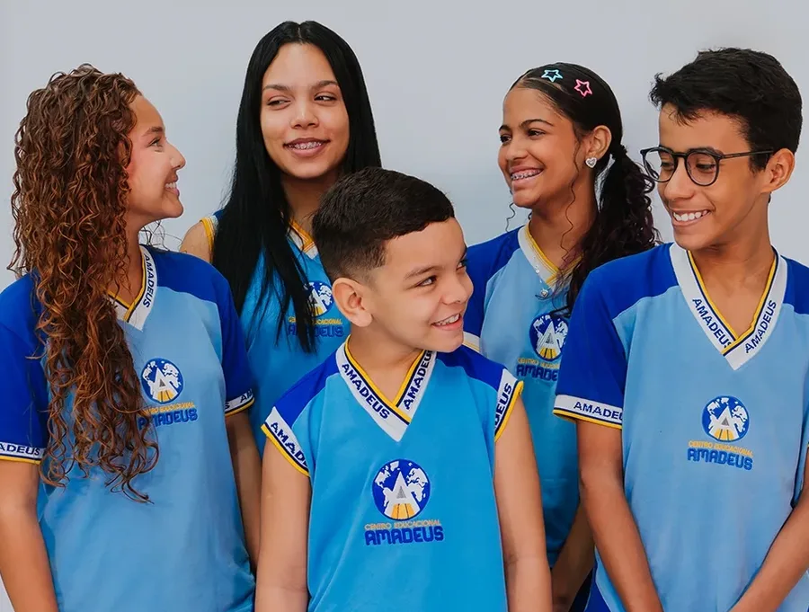
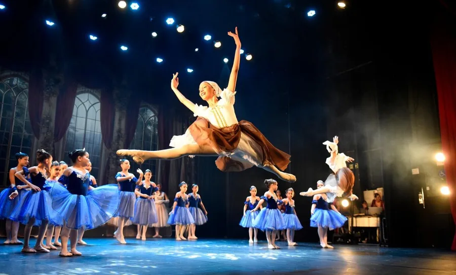
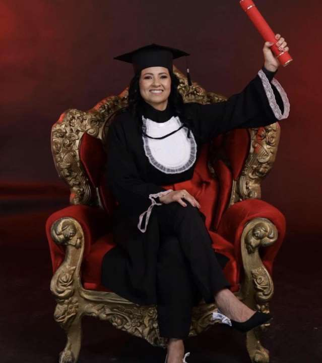

Centro Educacional Amadeus · 30 anos
Isso é o que
nóssomos!
Porque uma escola não se faz sozinha!
Centro Educacional Amadeus · 30 anos
Maria das Graças
Diretora
O que fomos.
O que somos.
E o que seremos.
Tudo era feito à mão.
“Nós podemos fazer diferente.”
Uma impressora.
Em muitas parcelas.
computadores usados.
Uma lousa. Numa sala só.
Depois, um projetor. E outro. E outro.
O ar-condicionado, sala por sala.
Hoje: todas as salas.



E vieram os programas.
Foram tempos difíceis. Nem todos acreditavam.
Mas não desistimos. Hoje, fazem diferença na vida de cada aluno.
Tecnologia envelhece.
Se tudo isso muda, o que permanece?
Por trás de cada um deles, sempre houve um aluno.
O que somos?
Uma escola que aprendeu a mudar sem perder a sua essência.
Estamos muito felizes em apresentar
Geekie
nosso novo material didático!
Geekie
Centro Educacional Amadeus · 30 anos
Educação Infantil
Onde tudo começa.
Gislene Sátiro
Coordenadora do Infantil
“O que você fez hoje na escola?”
Criança de 3 anos não precisa de mais tarefa.
Precisa de mais pergunta.
Por isso a escolha foi a Coleção Rios. As rotinas de pensamento dela vêm das pesquisas do Project Zero, da Universidade Harvard.
“O que podemos explorar dentro de uma cozinha?”
“O que um rosto pode comunicar?”
“Como podemos cuidar dos animais?”
Cada uma dessas perguntas ocupa um mês inteiro de investigação.
O Diário de Bordo
O caderno em que só o seu filho escreve. No fim do ano, ele vai para casa.
O Portfólio
Fotos e registros do que ele fez, ao longo do ano inteiro.
A escola deixa de ser uma caixa fechada.
Centro Educacional Amadeus · 30 anos
Fundamental 1
Onde a curiosidade vira conhecimento.
Fundamental 2
Onde eles descobrem do que são capazes.
Adriana Alves
Coordenadora Pedagógica do Fundamental 1 e do Fundamental 2
Quando você descobre que seu filho não entendeu?
No boletim.
E aí o bimestre já acabou.
A gente quis enxergar o erro na semana em que ele acontece.
Não foi trocar de livro por trocar. Foi para o professor agir enquanto ainda dá tempo.
O livro é a base.
Quem usa a plataforma é o professor, para preparar e enriquecer a aula.
Cada matéria tem o seu livro.
E toda semana a plataforma monta uma lista de estudo a partir dos erros do aluno.
Dois alunos da mesma turma recebem listas diferentes.
Toda sexta-feira
Um relatório do seu filho, no seu e-mail.
- O que ele recebeu na semana
- O que entregou
- Como foi em cada matéria
Você vai acompanhar o ano inteiro.
Não só o resultado dele.
Centro Educacional Amadeus · 30 anos
Pedro Luciano
Coordenador do Arboria

Projeto ArboriaAs oito inteligências de Howard Gardner
EsportesKaratê, futsal, vôlei e balletQual é a inteligência do meu filho?
Toda criança tem as oito.
Não só o que ela entregou.
Como ela chegou.
Explorar · Perceber · Praticar
“Desenhe o mapa do parquinho.”
Na Arena, o projeto tinha que funcionar na frente de todo mundo.
8 em cada 10 famílias já escreveram sobre os seus filhos.
0%
Nenhum ano conta a história sozinho.
O Arboria é caminho.
Não é seta.
Centro Educacional Amadeus · 30 anos
Maria das Graças
Diretora
Para nós, não é simplesmente uma rematrícula.
É uma renovação de confiança.
“Eu continuo acreditando nessa escola.”
Vocês estão nos entregando o que têm de mais precioso:
seus filhos.
Às famílias que caminharam conosco todos esses anos.
Às que chegaram agora.
Às que confiaram os primeiros filhos e depois trouxeram os irmãos.
Aos nossos professores e colaboradores, que construíram cada etapa.
Muito maior do que a compra de um equipamento:
Havia alguém acreditando comigo em um sonho.
Nós sabemos o que fomos.
Temos orgulho do que somos.
E trabalhamos, todos os dias, pelo que seremos.
Uma escola não completa 30 anos apenas porque o tempo passou.
Completa 30 anos porque muitas pessoas acreditaram nela.
Muito obrigada!
Sônia Travessa
Diretora Financeira
“Eu não estou no mesmo lugar onde comecei, e ainda não cheguei onde quero chegar.”
Sônia Travessa
Do sítio aos sonhos
“O dinheiro era pouco, mas os valores eram enormes.”

Desafios do aprendizado
“Mesmo com tantas limitações, meus pais nunca desistiram de nos educar.”
Mensalidades 2027
Agora, o que você vai investir no futuro do seu filho.
Matriculando até 30 de outubro:
e pagando até o dia 05:
Desconto fidelidade: R$ 20 a menos todo mês.
Promocional até 30 de outubro.
A partir de 02/11/2026
Material didático Geekie:
matriculando até 30 de outubro:
Comprado à parte, uma vez no ano.
Não desista de investir!
“Faça o teu melhor, na condição que você tem, enquanto você não tem condições melhores para fazer melhor ainda!”
Mario Sergio Cortella
Muito obrigada!